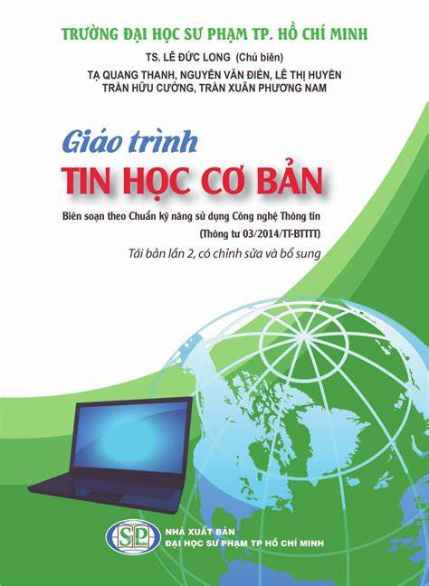

GIÁO TRÌNH TIN HỌC CƠ BẢN |
|
|---|---|
|  | Tác giả: Phạm Công Anh |
| Đồng tác giả: Lê Việt Nhân | |
| Hiệu đính: Hồng Phúc | |
| Chủ biên: Quách Tuấn Ngọc | |
| Nhà xuất bản: HNXB trẻ | |
| Chủ đề: Công nghệ | |
|
Nội dung của cuốn: Tin học cơ bản gồm 7 chương Chương 1: Một số vấn đề cơ bản Chương 2: Sử dụng thanh công cụ và thanh thực đơn trong My Computer và Windows Explorer Chương 3: Các thao tác trong Windows XP Chương 4: Các thiết lập trong Windows XP Chương 5: Bảo trì máy tính Chương 6: Các phím tắt Chương 7: Hỏi đáp và thắc mắc Xin trân trọng giới thiệu cuốn sách cùng các bạn |
|
| Giá bán: 26.000 VND/cuốn | |